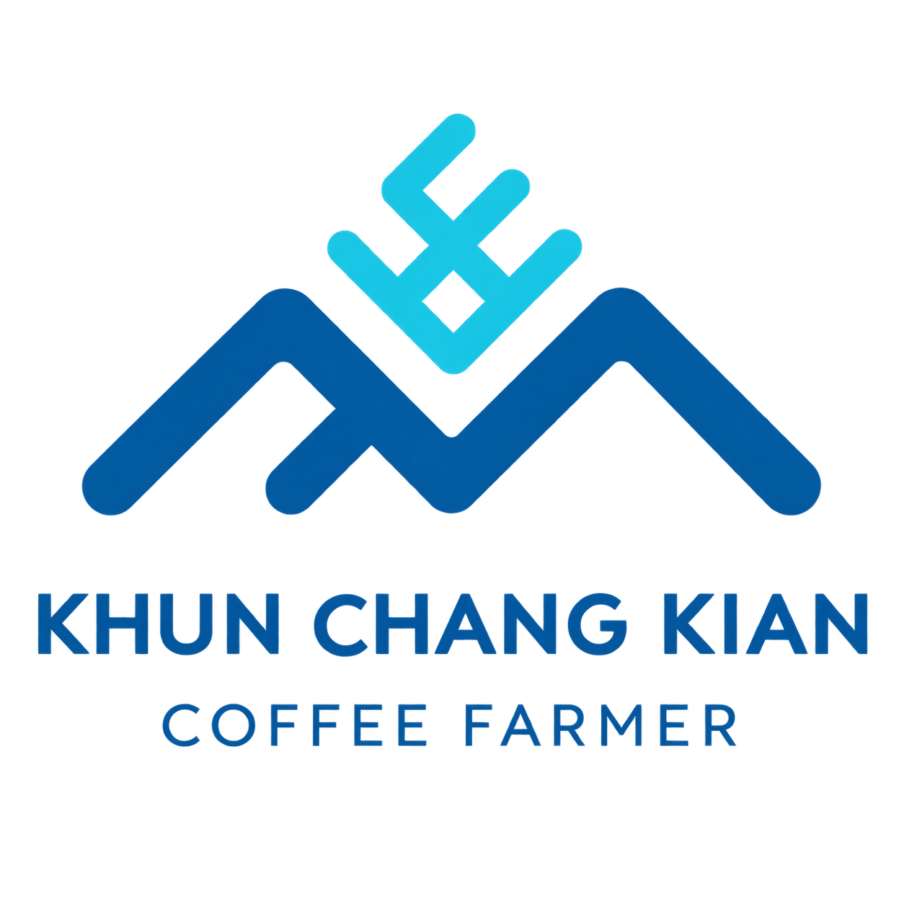
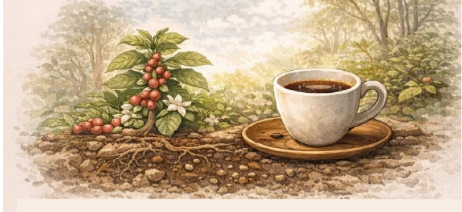
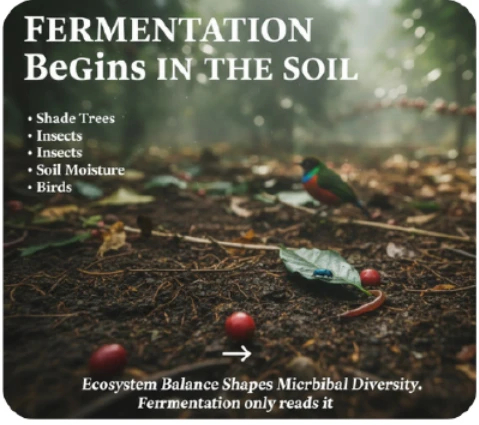
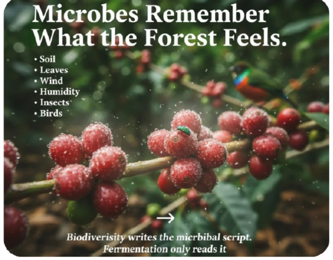
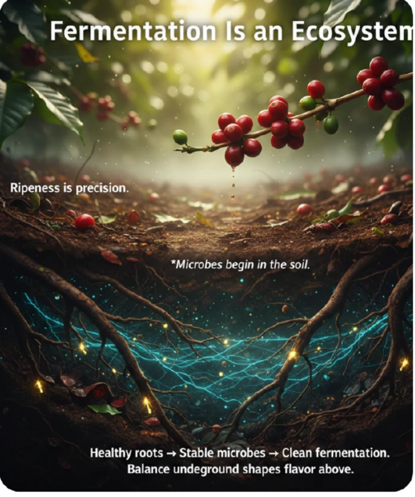

กิจกรรมที่ 1 · Ecology Coffee Walk
60–90 นาที · เดินเรียนรู้ระบบนิเวศและชิม 3 โพรเซส
ดูรายละเอียดกิจกรรมที่ 1
KCK.CoffeeEXPERIENCE 01 · KHUN CHANG KIAN
เดินไปกับผู้ปลูก อ่านเรื่องราวของดิน ร่มเงา และชีวิตในสวนกาแฟ ก่อนชิมความแตกต่างของกาแฟ 3 โพรเซส
เลือกวันและขอร้านยืนยัน
เรียนรู้ความเชื่อมโยงจากดินสู่ถ้วย ผ่าน 5 เรื่องราว
01 / 05
สังเกตใบไม้ที่ร่วงทับถม ความชื้น และร่มเงา เรียนรู้ว่าอินทรียวัตถุและสิ่งมีชีวิตในดินช่วยหมุนเวียนธาตุอาหาร และดูแลต้นกาแฟอย่างไร

02 / 05
มองสวนกาแฟเป็นส่วนหนึ่งของป่า เรียนรู้ความสัมพันธ์ของต้นไม้ นก แมลง และจุลินทรีย์ ผ่านการสังเกตสิ่งที่พบระหว่างทาง

03 / 05
Washed: ลอกเปลือก หมักและล้างเมือกก่อนตาก · Honey: ลอกเปลือกและตากโดยคงเมือกบางส่วนไว้ · Natural: ตากทั้งผล เรียนรู้ความต่างของขั้นตอนและสิ่งที่ผู้ผลิตต้องดูแล
04 / 05
ยีสต์และแบคทีเรียมีส่วนเปลี่ยนองค์ประกอบในระหว่างการหมัก ชวนรู้จักการดูแลเวลา อุณหภูมิ และความสะอาด โดยรสชาติยังขึ้นกับสายพันธุ์ ความสุก การตาก และการคั่วร่วมด้วย

05 / 05
ชิม Washed · Honey · Natural แล้วเปรียบเทียบกลิ่นผลไม้ ความหวาน ความสะอาด ความสมดุล และเนื้อสัมผัส แลกเปลี่ยนสิ่งที่แต่ละคนรับรู้กับผู้ปลูก พร้อมรับ Drip Bag 3 ซองเป็นของฝาก
สถานที่: ขุนช่างเคี่ยน เชียงใหม่ สวนกาแฟบนดอยสุเทพ–ปุย ระดับความสูงประมาณ 1,300–1,400 เมตร
รวมกิจกรรมเรียนรู้ ชิมกาแฟ และ Drip Bag 3 ซองต่อคน ไม่รวมการเดินทาง อาหาร และที่พัก
แนะนำรองเท้าหุ้มส้นที่เดินสะดวก น้ำดื่ม และอุปกรณ์กันฝนหรือกันแดดตามสภาพอากาศ
เส้นทางและจุดเรียนรู้อาจปรับตามอากาศและสภาพสวน โปรดแจ้งข้อจำกัดการเดินหรือความต้องการเฉพาะกับร้านก่อนจอง
รอร้านยืนยันราคา วันว่าง และรายละเอียดก่อนชำระเงิน
เลือกกิจกรรมที่ 1 / ขอราคาแตะภาพเพื่อเปิดดูขนาดใหญ่ ภาพในคู่มือเป็นภาพประกอบเพื่อการเรียนรู้